第十章 数据管理与清洗
第九章完成数据获取后，研究者面对的往往不是一张可以直接分析的表，而是一组来源、版本和格式各不相同的文件：问卷平台导出的记录、手工录入的名单、从数据库下载的文献条目、学校行政表以及访谈或观察的编码表。此时最危险的做法，是把它们直接交给统计软件。软件会计算均值、回归系数和图表，却不会判断一条记录是否重复、一列日期是否其实是文本，或一个空白究竟表示未回答还是不适用。
数据管理与清洗的目标不是把数据“修”成理想结果，而是使每一个值的含义、来源和变化都可解释、可复核。清洗会改变分析所使用的数据，因此它本身就是研究方法的一部分。本章以 Excel 为入门工具，并说明何时应把重复操作写成 R 脚本，使清洗从一次性手工操作发展为可重复的工作流。
10.1 数据管理使清洗成为可追溯的工作
清洗从文件组织开始，而不从某个函数或按钮开始。图10-1把项目目录分为 R 脚本、Data 和 images 三个部分。它传达的是一种分工原则：数据、分析程序和图像等产出应分别保存，不能用“最终版.xlsx”“最终版2.xlsx”之类名称代替版本管理。实际项目还应把原始数据、处理中的工作副本、清洗后数据、数据字典和清洗记录分开存放。
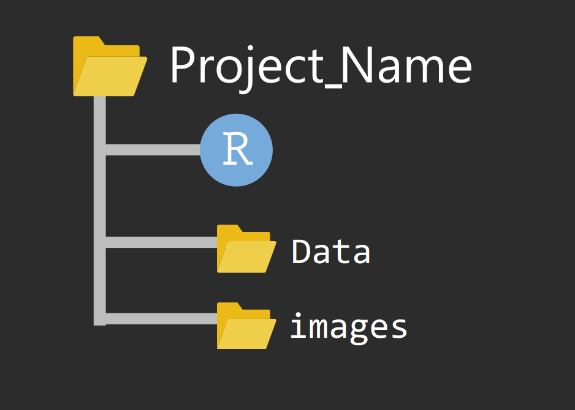
数据文件、字段和取值需要在收集时就建立规范。一个字段名应稳定、简短、无歧义，例如用“student_id”表示匿名学生编号，用“survey_date”表示填写日期；不要在同一文件中交替使用“学号”“学生编号”和“ID”。字段的存储类型同样重要：编号可能看起来像数字，却不应参与加总；日期必须是可识别的日期值；类别变量要有明确的代码与标签。每一行还必须有清楚的分析单位，例如一名学生、一次答题、一篇文献或一所学校某一年度的记录。
| 对象 | 应事先说明的内容 | 示例 | 常见后果 |
|---|---|---|---|
| 文件与版本 | 来源、获取日期、责任人、原始版与工作版 | survey_raw_2026-07-15.csv、survey_clean_v01.csv | 覆盖原始数据后，无法判断结果来自哪一版 |
| 分析单位 | 一行代表谁或什么 | 一行代表“一名学生的一次有效填写” | 把学生记录与班级年度汇总混在一张表中 |
| 唯一标识符 | 用于识别和合并记录的字段 | 匿名问卷 ID、DOI、机构代码 | 用姓名或标题等不稳定文本误判重复 |
| 字段名与类型 | 名称、文本／数值／日期／类别、单位 | score 为 0—100 数值；gender 为类别 | 把文本日期当作时间变量，或把编号求平均 |
| 缺失与特殊码 | 空白、拒答、不适用、跳题分别如何编码 | NA、-99、not_applicable 并在字典中解释 | 把未答题当作 0，扭曲均值与比例 |
| 允许值与规则 | 合法范围、逻辑关系、同义词对照表 | 年龄 15—22；“华东师大”统一为“华东师范大学” | 同一类别被拆成多个类别，或错误值进入模型 |
建议建立三份不可相互替代的材料。第一份是原始数据：只读保存，不在其中删除、替换或新增变量。第二份是工作数据：所有清洗在副本上完成。第三份是数据字典与清洗记录：前者说明每列是什么，后者说明做了什么。清洗记录至少写明日期、操作者、输入版本、规则、受影响的记录数、输出版本及异常情况。若文件含成绩、联系方式、健康、身份或其他敏感信息，还应单独记录访问权限、脱敏方式和保存期限。
10.2 先识别“脏”在哪里
脏数据并不等于数据“难看”，而是指数据的表示方式或记录过程妨碍了正确解释。图10-2是一张建设项目表的局部：标注分别指向数据值缺失、日期格式不规范、项目名称乱码、未标注单位和不合理值。它提醒我们，同一张表可以同时存在多种问题；一个“空单元格”也可能是缺失、占位符、导出失败或根本不适用，不能在未判断含义前统一处理。
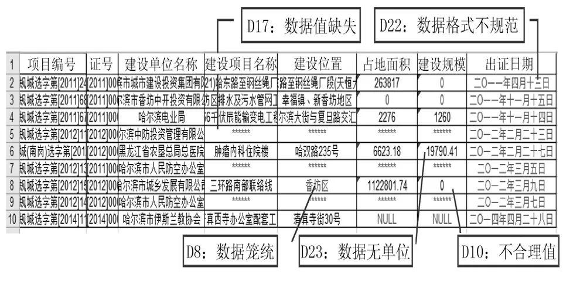
该流程把数据工作表示为“导入—整理—转换—可视化／建模—沟通”的循环，其中 *Tidy*（整理）被置于导入之后、分析之前。图中的回路表明：发现图表或模型异常时，研究者常需要回到变量定义、编码或清洗规则重新检查；清洗不是只发生一次的线性步骤。
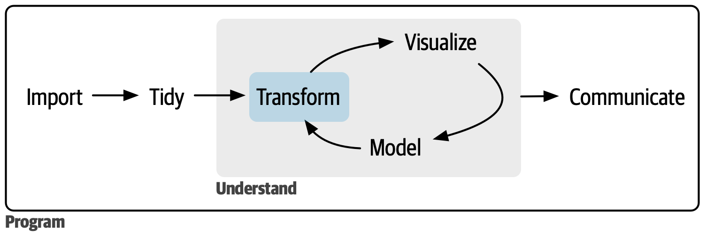
| 问题 | 识别线索 | 可能做法 | 不能省略的判断 |
|---|---|---|---|
| 缺失 | 空白、NULL、特殊码、跳题 | 保留缺失、按规则排除、在有条件时插补 | 缺失是未答、拒答、不适用、系统故障，还是尚未采集？ |
| 重复 | 相同 ID、相同 DOI、相同时间与内容组合 | 标记、合并、保留一条或人工复核 | 是同一对象重复提交，还是不同对象恰好同名？ |
| 错误或乱码 | 拼写、字符编码、日期、单位、范围异常 | 回查原始材料、更正、置为缺失并记录 | 有无可靠来源支持更正？ |
| 不一致 | 同义机构名、大小写、全半角、日期写法不同 | 建立对照表并生成标准字段 | 合并后是否抹去了研究所需差异？ |
| 类型不当 | 数字以文本保存、编号被当作数值、混合日期文本 | 转换类型并抽样核对 | 转换是否改变前导零、精度或缺失码？ |
| 异常值 | 超出合理范围、逻辑矛盾、极端值 | 标记、回查、保留或按预定规则处理 | 它是录入错误，还是真实但罕见的观察？ |
| 多表整合 | 键值不唯一、连接后记录数突增或减少 | 明确连接键、匹配方式和未匹配记录 | 一对一、一对多还是多对多关系？ |
| 脱敏与访问 | 姓名、电话、精确地址、可再识别组合 | 最小化导出、替换标识符、限制访问 | 清洗副本是否无意中保留了可识别信息？ |
这里的“标准化”主要指统一格式、单位、类别标签和编码；它不同于为了建模而对数值进行中心化、标准化或归一化。后者是否需要，取决于模型和变量尺度，不能因为数值看起来很大或很小就随意改变。类似地，数据集成并不只是把两张表复制到一起，而是要检查连接键、时间范围、单位和记录粒度是否相容。
10.3 建立安全的清洗顺序
面对一份新数据，可按“先观察、再规则、后修改、再验证”的顺序推进。先浏览字段名、行数、缺失码、唯一标识符、取值范围和几个原始样例；再把发现的问题写成规则；随后只在工作副本中执行；最后将清洗前后的行数、唯一值数、缺失数和关键汇总进行对照。每次修改都应产生一个可命名的输出版本，而不是在同一文件中反复覆盖。
| 阶段 | 要做什么 | 应留下的证据 |
|---|---|---|
| 冻结输入 | 保存原始导出文件，记录来源、时间、文件校验或版本号 | 原始文件与获取说明 |
| 描述数据 | 检查行列数、字段类型、关键类别、缺失与异常范围 | 初步质量概览 |
| 制定规则 | 定义重复判定字段、缺失处理、统一标签、纳入／排除条件 | 清洗计划或规则表 |
| 生成新字段 | 不覆盖原字段；在新列中写入标准名称、日期、分组或匹配结果 | 原字段与处理字段并存 |
| 执行与记录 | 运行 Excel 操作或脚本，记录受影响的记录数 | 清洗日志和输出版本 |
| 核验输出 | 比较前后记录数、唯一 ID 数、缺失数、频数与关键汇总 | 质量检查表、抽样回查结果 |
“生成新字段”尤其值得坚持。若把原始机构名直接替换为标准机构名，日后就无法判断某条记录原来写的是“华师大”还是“华东师范大学”。更稳妥的做法是保留 institution_raw，新建 institution_std；原始值是证据，标准值是分析所用的解释。
10.4 去重：先定义同一记录，再执行删除
完全相同的记录不一定就是重复，部分相同的记录也不一定不是重复。以问卷为例，若同一匿名 ID 在很短时间内提交两次、核心答案完全一致，可以作为待核查的重复候选；若两名学生同名，或者一名学生在两次追踪测量中都有记录，则不能仅凭姓名删除。文献数据中，DOI 通常比标题和作者字符串更适合作为去重键；没有 DOI 时，才需要组合标题、作者、年份、来源等字段并人工复核。
Excel 的“删除重复项”会依据所选列判断重复，并永久删除被判为重复的整行。图10-4依次呈现数据工具区的按钮、选择判定列的对话框和删除后的反馈信息。该功能适合规则明确的完全重复；在点击“确定”前，应复制工作表或先用条件格式、筛选和 COUNTIF 标记候选记录。Microsoft 的重复值处理说明明确提示：删除重复项是永久更改，且未选作判定列的其他单元格仍会随整行被删除，因此必须先核查选列是否真的构成唯一键。
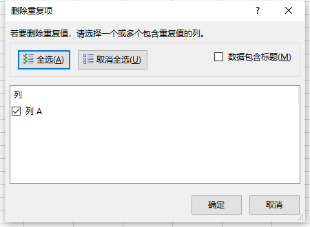
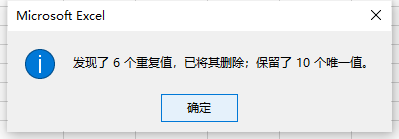
| 数据情境 | 候选键 | 处理建议 | 必须记录的内容 |
|---|---|---|---|
| 一次性匿名问卷 | 匿名提交 ID；必要时结合提交时间与关键题 | 相同 ID 的多次提交先标记，再按预定规则保留 | 保留哪一条、删除多少条、是否存在共享设备风险 |
| 学生成绩或行政记录 | 学号＋学期＋课程代码 | 先确认一行代表一次成绩还是一次学生记录 | 主键定义、重修或补考是否应保留 |
| 文献条目 | DOI；无 DOI 时用题名、作者、年份组合 | 自动候选后抽样人工核验 | 规范化题名规则、合并与删除数量 |
| 机构名或地名 | 标准编码优先，名称仅作辅助 | 建立原名—标准名对照表，不直接覆盖原名 | 对照表版本和无法判定的条目 |
10.5 缺失、空行与错误值：不要把空白一律删掉
缺失值不等于 0。在问卷中，0 可能表示“从不”，而空白可能表示未作答；在行政数据中，空白可能是尚未上报、无此项目，或导出时丢失。处理前要把这些情况编码为可区分的类别，并查看它们集中在哪些群体、题项或时间段。若缺失与低参与度、设备故障或敏感问题有关，直接删除含缺失的记录可能引入新的偏差。
可以删除的是符合预先规则的整条无效记录，而不是任何包含空格的行或单元格。图10-5展示使用“定位条件—空值”选出空单元格、再选择删除整行的过程。只有当所选空行确实是导入时产生的空白记录，且不承载任何观测时，删除整行才合理；若数据表中某一列为空、同一行其他列仍有值，删除整行会误删有效信息。
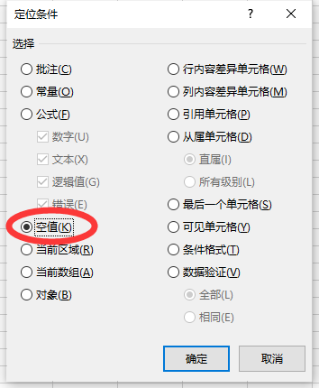
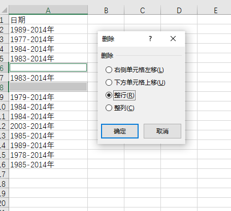
少量缺失是否可以用均值等方法替换，取决于变量含义、缺失机制、样本量和后续模型。均值替换虽然方便，却会压低变量的离散程度，也可能改变变量之间的关系；它不是默认选项。对于量表数据，应先遵循量表开发者的计分规则；对于关键结果变量或高比例缺失，应报告缺失情况并评估排除后的样本变化。无论选择保留、删除、插补或单列标记，都应写清规则及影响的记录数。
10.6 统一文本、类别与日期，同时保留原始证据
同一个机构可能被填为“华东师范大学”“华东师大”“华师大”或“ECNU”，一个主题词可能出现拼写错误或希腊字母与拉丁转写并存。这些差异会使频数表把同一类别拆开，也会导致跨表匹配失败。图10-6展示在“查找和替换”中把日期字符串中的“/月”替换为空白，前后两侧的列显示同一批文本由混杂写法变为统一写法。批量替换应先在筛选出的样本上试运行，并保留替换清单；对于类别名，优先在新字段中根据对照表生成标准标签。
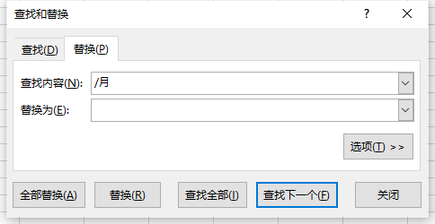
查找和替换界面进一步展示“单元格匹配”选项。未勾选时，替换可能发生在较长字符串的局部；勾选后，只有整个单元格与查找值一致才会改变。统一类别名称时，这一差别非常重要：把“闵行”替换为“闵行区”不应意外改动“闵行区校区”等本已正确的表述。
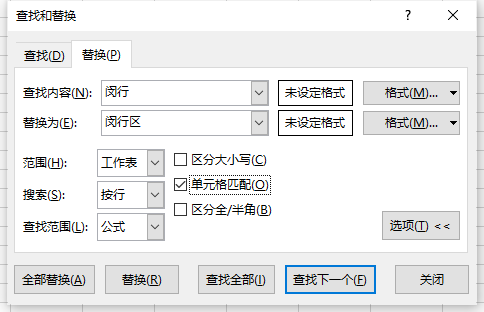
当问题来自字符串结构而非少数同义词时，文本函数更适合生成新字段。表10-5汇总了常用函数及其清洗用途。函数名和参数会因软件语言与版本显示方式略有不同，但应始终先用几行样例验证结果，再填充到全列。
| 函数 | 作用与基本形式 | 适用示例 | 使用时的注意事项 |
|---|---|---|---|
| LEN | 计算文本长度：LEN(text) | 检查固定长度编码、发现异常短的 ID | 文本末尾不可见空格也会影响长度 |
| LEFT／RIGHT | 从左／右截取指定字符数：LEFT(text, num_chars) | 从“2024-教育学”中取年份；从编码末尾取类别 | 只有位置稳定时才可靠；先检查是否存在变长编码 |
| MID | 从指定位置截取：MID(text, start_num, num_chars) | 从固定格式编号中提取中间段 | start_num 从 1 开始，位置偏移会产生错误值 |
| FIND | 查找字符串首次出现的位置：FIND(find_text, within_text, [start_num]) | 先定位分隔符，再配合 LEFT／MID 拆分 | 找不到时会报错；应预先处理无分隔符的行 |
| SUBSTITUTE | 按文本内容替换：SUBSTITUTE(text, old_text, new_text, [instance_num]) | 移除多余单位、统一明确的同义写法 | 替换全部还是第几次出现，必须写入规则 |
| CONCATENATE／CONCAT／& | 拼接文本 | 用院系代码和学号生成复合键 | 连接键前应统一类型和前导零；不要用展示名称代替稳定 ID |
| TRIM | 清理多余空格：TRIM(text) | 去除导入文本首尾或连续空格 | 非断行空格等字符可能需要另行处理 |
日期应先转换为真实日期值，再提取年份、月份、日和星期等分析字段。YEAR、MONTH、DAY 和 WEEKDAY 都以日期值为输入；若一列同时混有“2026/7/15”、文本“2026年7月15日”和空白，直接使用函数可能得到错误或不一致结果。应先抽样检查格式、明确本地日期解释规则，再生成 year、month 等新列。原始日期字符串应保留，以便在出现异常时回查。
10.7 异常值需要回查，而不是自动删除
红黄绿的色阶标示一张数值表中的高低取值。条件格式、排序、筛选和箱线图都能帮助研究者快速发现值得检查的单元格；它们提供的是“去看一看”的线索，不是自动删除的理由。例如，成绩超过满分、年龄为负数、答题时长为0或同一ID出现相互矛盾的背景信息，可能是录入或导出错误；极高的考试成绩、少见的学校类型或罕见的研究主题，也可能是真实而重要的观察。
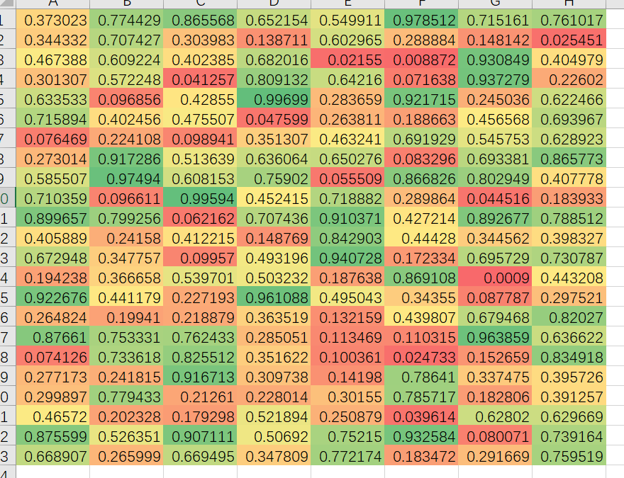
对于每个异常值，至少记录“触发规则—回查证据—最终处理”。若确认是录入错误，应根据可靠原始材料更正；若无法确认，可将其标记为缺失或保留并在分析中说明；若是真实极端值，应考虑其对结果的影响，而不是因为它使结论不稳定就删除。清洗不能服务于显著性或预期方向。
10.8 拆分、合并与跨表匹配：先让字段结构正确
一个单元格只应承载一个分析上独立的值。图10-9左侧将“字母”和“数字”两列拼接为新编码，右侧把以分号分隔的多位作者文本拆到不同列。此类操作的前提是分隔符和结构稳定：若作者名内部也可能出现逗号，或一条记录的作者数量不同，简单分列会损坏信息。分析前应先决定该字段究竟应保留为原始文本、拆成长表中的多行记录，还是拆成有限的多个列。
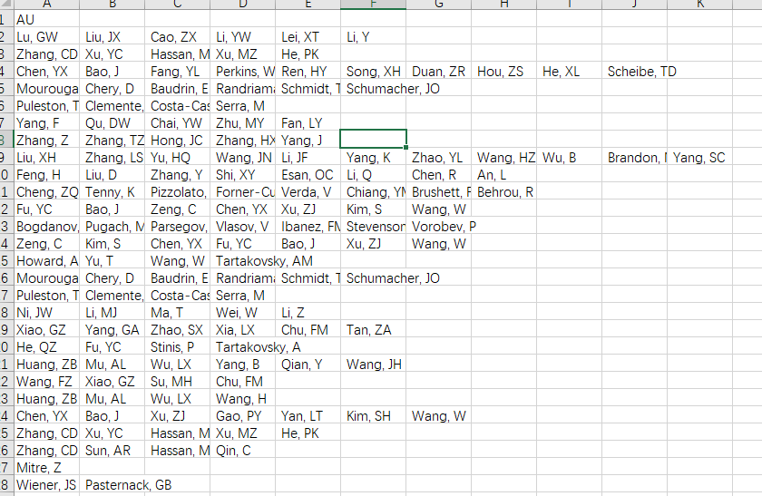
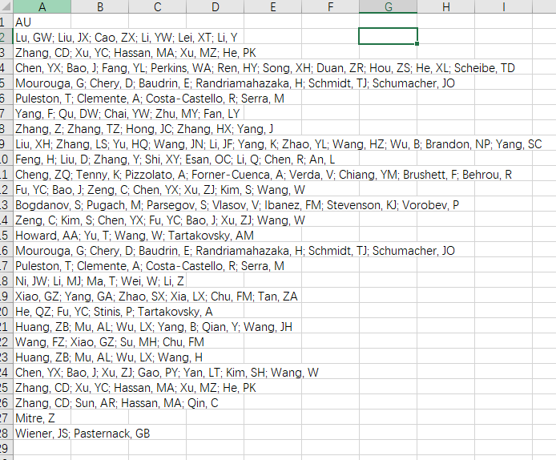
IF 函数可按明确条件生成新变量。图10-10以“成绩大于等于 90 分”为条件，把结果标记为“优秀”。其基本思想是：若逻辑条件为真，返回一个值；否则返回另一个值。条件必须来自研究或业务规则，而不是看完结果后临时设定；例如“优秀”的分界线应依据既定评分制度，而不能为让某个组别看起来更好而改变。
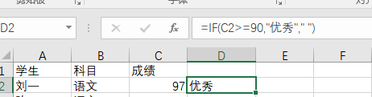
跨表补充信息时，必须先检查键的唯一性、类型和匹配率。图10-11以学生姓名为查找值，在 A—C 列范围中返回对应科目；公式末尾的 FALSE 表示精确匹配。对于研究数据，更应使用学号、匿名 ID、DOI 或机构代码等稳定键，避免用同名姓名匹配。Microsoft 的VLOOKUP 函数说明指出，VLOOKUP 只能在查找范围的第一列寻找键并向右返回值；在较新的 Excel 中，XLOOKUP 可以双向查找且默认精确匹配，但协作文件若要兼容旧版本，仍可能需要使用 VLOOKUP。无论使用何种函数，都应报告未匹配、重复匹配和一对多匹配的记录数。
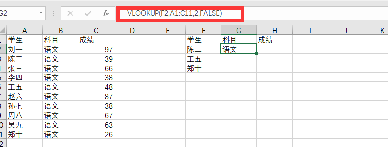
10.9 用数据透视表进行汇总与质量检查
数据透视表可把“每行一条记录”的明细表快速汇总为按类别比较的二维表。图10-12中，字段列表把“科目”放入列区域、“学生”放入行区域、“成绩”放入值区域，随即生成各学生在不同科目下的成绩和总计。这个过程有助于发现意外的空白类别、拼写变体、异常总计或本不该出现的组合。
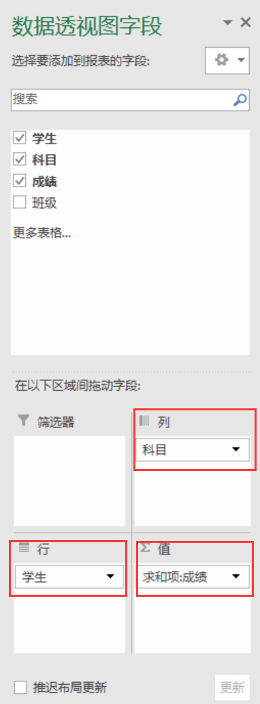
后续两张透视表先加入“班级”分组，显示各班学生在数学、英语和语文中的分项及总计，再把值字段由“求和项：成绩”改为“平均值项：成绩”，得到各班、各科的平均分。两张图说明：透视表的结果不仅取决于行列字段，还取决于值字段采用求和、计数、平均值还是其他汇总方式。把成绩求和与求平均会回答不同问题，不能只看到数字就作解释。
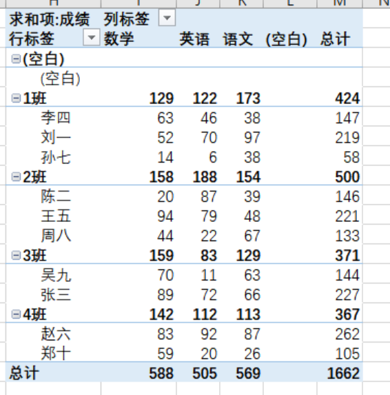
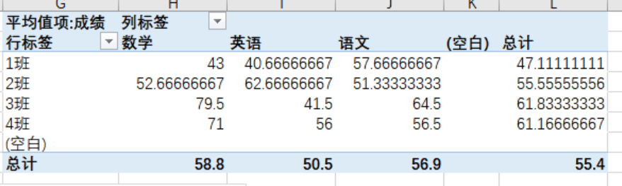
创建透视表前，数据应是规则的表格：第一行只有一行唯一、非空的字段名；每列的数据类型一致；中间没有合并单元格、说明文字、空白行或人工总计行。Microsoft 的透视表指南也强调，源数据应按列组织并具有单一表头行；数据更新后需要刷新透视表。透视表用于探索、核查和描述性汇总，并不自动构成统计推断。
10.10 从手工操作走向可复现脚本
Excel 适合查看数据、试验规则和处理中小规模表格；当数据会周期性更新、清洗步骤较多、需要合并多个文件，或需要让他人复核时，应把规则写入脚本。一个名为 Clean.R 的脚本不应只是若干零散命令，而应按固定顺序读取原始数据、检查字段、生成标准字段、处理缺失与重复、输出清洗后文件，并在运行时保留日志。
R 中的dplyr把常见操作组织为一组清晰的动词：select() 选择列，filter() 按条件保留记录，mutate() 生成或修改变量，arrange() 排序，group_by() 与 summarise() 进行分组汇总。这种写法的优势不是“更高级”，而是每一步都能被重新运行和审阅。应把输入文件路径、关键字典、纳入规则和输出文件写得明确，并在脚本开头记录所用软件包与版本。filter() 对缺失值的处理也需要特别小心：条件判断中的 NA 不会自动等价于“保留”，因此应先明确缺失记录要如何处理。
脚本化不等于放弃人工判断。对机构名、复杂重复、异常个案和编码错误，研究者仍须检查原始证据；脚本的作用是把已经明确的规则稳定地应用到全部记录，并在新一批数据到来时再次执行。无论使用 Excel 还是 R，最终都应能回答三个问题：输入是什么，规则是什么，输出相对输入改变了什么。
10.11 清洗完成后的交接与核验
清洗后交给第十一章分析的，不应只是一份“干净的 Excel”。至少应包括：只读原始数据、清洗后数据、数据字典、清洗脚本或步骤记录、字段对照表、纳入与排除记录，以及质量检查结果。对问卷数据，还应保留题项、反向计分、跳题逻辑和有效样本规则；对文献或数据库数据，还应保留检索式、导出日期、去重键和合并方式。
| 检查项目 | 应回答的问题 | 简要核验方式 |
|---|---|---|
| 记录数量 | 原始、清洗后、排除后各有多少行？ | 比较行数并解释每次变化 |
| 唯一键 | 每个分析单位是否只有一条应有的记录？ | 统计唯一 ID、检查重复候选 |
| 字段与类型 | 每列的名称、含义、单位、类型是否明确？ | 更新数据字典，抽样核对 |
| 缺失与异常 | 哪些字段仍有缺失或极端值，如何处理？ | 输出缺失频数、范围检查和处置日志 |
| 标准化与匹配 | 同义类别是否统一，连接是否完整？ | 对照表、匹配率、未匹配清单 |
| 复现能力 | 他人能否从原始数据重复得到该版本？ | 重新运行脚本或按记录复做关键步骤 |
| 隐私与权限 | 是否保留了超出分析所需的识别信息？ | 最小化字段、核对访问权限和脱敏副本 |
常见误区
第一，把原始表直接改到看不出来源。第二，用“删除重复项”代替重复判断。第三，把所有空白都当作 0，或把所有含空值的行都删除。第四，用查找替换把不同情境中含义不同的文本一并改掉。第五，因为异常值影响结论而删去它，却没有回查或记录。第六，用姓名、标题等不稳定文本跨表匹配，又不检查一对多关系。第七，把数据透视表的汇总当作最终因果或统计推断。第八，只保留清洗后的文件，无法重现哪些记录和变量被改变。
本章小结
数据管理与清洗把“获得数据”转变为“能够被可信分析的数据”。可靠的工作始于明确的文件、字段、唯一键和缺失规则，落实于对重复、缺失、错误、不一致和异常的可解释处置，结束于可复核的清洗记录、数据字典和质量检查。Excel 的筛选、函数、查找替换、匹配和透视表能够帮助研究者发现并处理许多问题；当规则复杂或数据持续更新时，R 脚本能够使这些规则稳定地重复执行。下一章将在这份有来源、有定义、有处理记录的数据基础上讨论回归与聚类。
思考与练习
- 为一份学生问卷设计数据字典：至少包含匿名 ID、年级、两道量表题和一项缺失值规则。
- 在一张含姓名、学号、日期和成绩的练习表中，分别设计“完全重复”“疑似重复”和“不能仅凭姓名判断”的三条规则。
- 找出一列机构名称中的三种不一致写法，设计原始字段、标准字段和对照表；说明哪些写法不能自动合并。
- 选择一列日期文本，先说明其可能的格式差异，再生成可用于分析的年份和月份字段，并保留原始列。
- 用数据透视表分别计算各班各科的记录数、总分和平均分，解释三种汇总回答的问题有何不同。
- 为一次清洗写一条日志，包含输入版本、规则、受影响记录数、输出版本和一个仍未解决的问题。